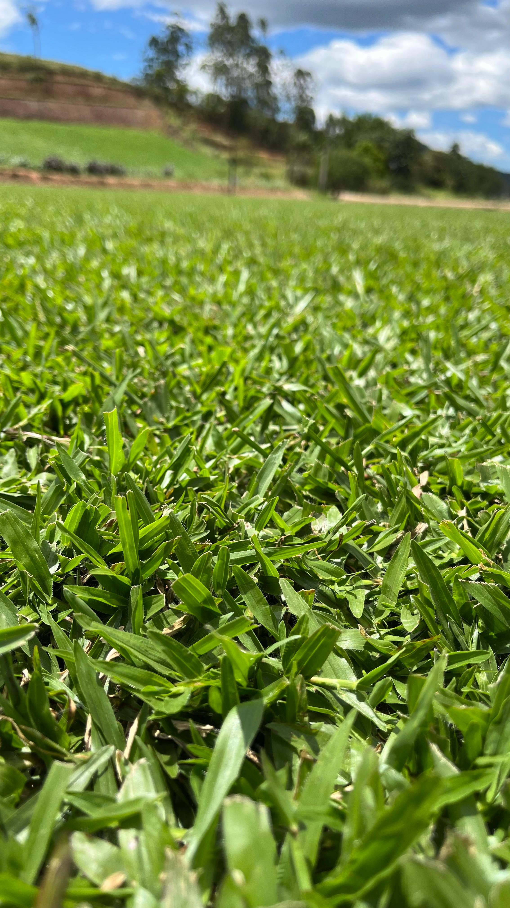

Mais vendida
Grama Esmeralda
Uma das variedades mais utilizadas no Brasil devido à sua beleza e resistência.
Características
- Folhas finas e delicadas
- Coloração verde intensa
- Excelente acabamento estético
- Alta resistência ao pisoteio
- Fácil manutenção
- Ótima adaptação ao clima de SC
Indicada para
- Jardins residenciais
- Condomínios
- Empresas
- Praças
- Paisagismo
- Áreas de lazer